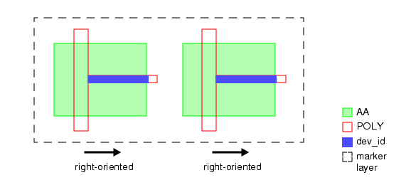

You can use marker
layers to identify and check device orientation. This rule checks
that all devices within the same marker layer shape have the same
orientation.
The following figure shows a valid marker
layer, since both devices are right-oriented. This particular marker
layer would fail if one of the devices were oriented in a different
direction.
Figure 1. Sample Layout With Device Markers
This check can be implemented using several
Grow operations and a single DFM Property operation.
Try It!
|
Calibre Advanced DRC (eqDRC) Tutorial and Example Kit
Go to this page on Support Center
to download the complete eKit.
This example is in the device_routing_checks/device_orientation
example directory.
|
Procedure
- Derive the layer used to identify
the device orientation.
dev_id = (INT POLY < 0.1 REGION) AND AA
Note: In this
case, the REGION keyword produces rectangular polygons. In general, processing
the output of the REGION keyword when skew polygons are generated
can negatively impact performance.
- Derive the layers used to
check the device orientation.
There are four possible
orientations. In the previous figure (Figure 1), the dev_id layers are
surrounded on three sides by active area (AA). To check the device orientation
in this case, use four Grow operations:
d_l = (GROW dev_id LEFT BY 0.01) NOT AA
d_r = (GROW dev_id RIGHT BY 0.01) NOT AA
d_t = (GROW dev_id TOP BY 0.01) NOT AA
d_b = (GROW dev_id BOTTOM BY 0.01) NOT AA
Each Grow operation expands
the dev_id layer by a small amount in a specified direction. If
the resultant polygon is inside the AA region, it is eliminated
with the NOT operation. For the example layout shown in Figure 1, only layer d_r contains shapes.
- Use a DFM Property operation
with a non-persistent property expression to identify marker layers
that contain devices oriented in more than one direction:
wrong_orient = DFM PROPERTY marker d_l d_r d_t d_b OVERLAP ABUT ALSO
[- = !!COUNT(d_l) + !!COUNT(d_r) + !!COUNT(d_t) + !!COUNT(d_b)] > 1
The !!COUNT function returns
0 if the count is zero, and 1 if the count is non-zero. If all devices
on the marker layer are oriented in the same direction, the expression
returns 1. If two or more devices are oriented in two or more directions
on the marker layer, the expression returns a value greater than
1 and the expression does not pass the constraint.
- Output the results with a
DFM RDB operation.
wrong_orient {
DFM RDB wrong_orient eqdrc.rdb CHECKNAME "%_l_"
CELL SPACE ALL CELLS
}